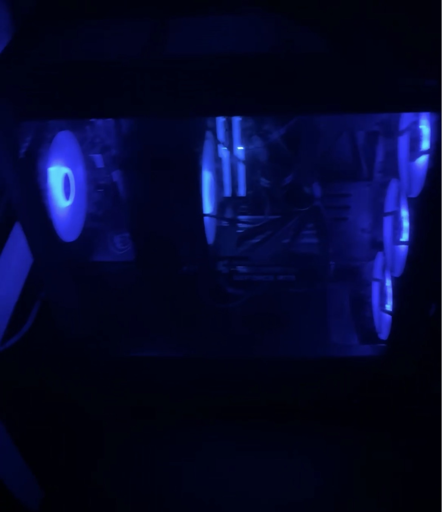

Hands-On Computer Work
This page shows some of the hands-on computer work I have completed while building my Information Technology skills.
PC Hardware Upgrades
Installed and upgraded computer components including graphics cards, RAM, and other internal hardware while learning proper installation, compatibility, and troubleshooting.
Troubleshooting
Diagnosed computer issues involving hardware, software, drivers, performance, BIOS settings, and Windows configuration.
Software & Setup
Worked with Windows, software installation, device setup, drivers, updates, and basic network troubleshooting.
Work Photos

Before
PC setup before I began working on the cooling system and hardware.

Installation
Installing and securing the CPU cooler during the upgrade process.

Completed
Finished setup after completing the CPU cooler installation and checking the system.